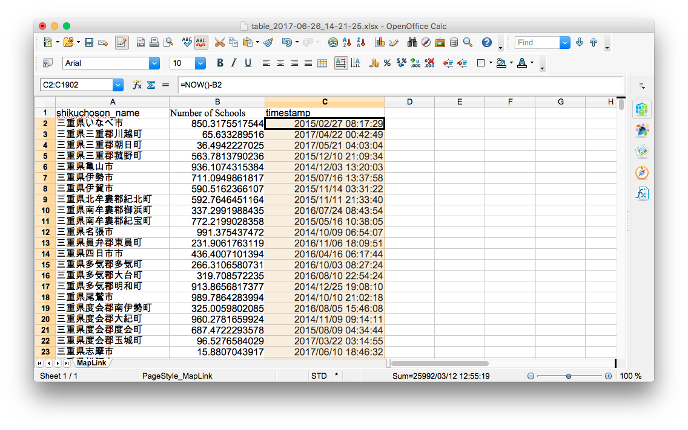
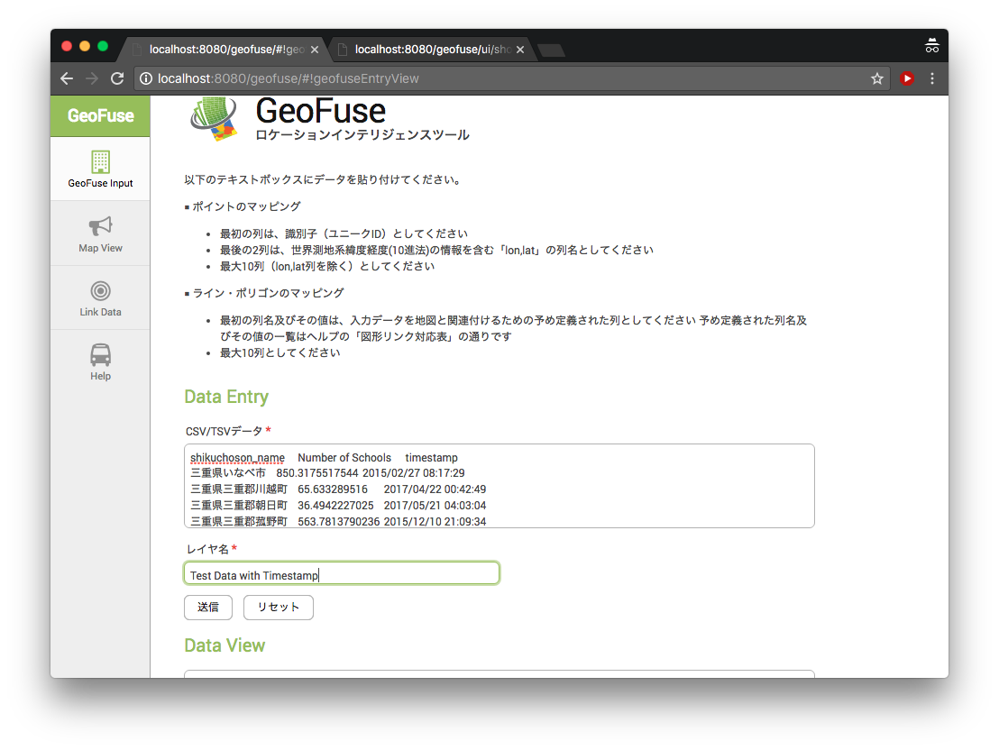

Quick Tutorial
Entering Data
Below are the steps that can be used to visualise data into GeoFuse
- Download a Map Link Table file from GeoFuse and open the file with Excel or OpenOffice.

- Add a Column Name and place sample data. For this example, "Number of Schools" will be used and random data will be placed using the Excel function
=RAND() * 1000
and cut and pasted into the entire column.

- Then select and copy all the data

- And paste the selected data into the GeoFuse Input page and add "Test Map" as its Layer Name

- Submit the data and view the created map

Entering Timestamp Data
GeoFuse has the ability to handle timestamps and filter maps based on the data/time given data. But in order to do this, the Timestamp data should have a column named "timestamp" and the data entered should be in the "YYYY/MM/DD HH:DD:SS" or "YYYY-MM-DD HH:DD:SS" formats. Below are the steps that can be used to enter data with timestamps into GeoFuse
- Using the spreadsheet above, add "timestamp" as a column name and format the entire row into "YYYY/MM/DD HH:DD:SS" format. With OpenOffice, this done by selecting the entire column and go to Format -> Cells menu option.

- Sample timestamp data can be created using the Excel function
=NOW() - B2
and then cut and pasted into the entire column.

- The entire data is once again copied and then pasted into the GeoFuse Input page with "Test Data with Timestamp" as its layer name.

- When viewing the created map, there will be now a To Date and From Date options which will make it possible to display only data within the specified dates. These options will only be included if the sent data includes timestamps.

Entering X,Y (Longitude/Latitude) Data
GeoFuse also has the capability to handle data that already have X,Y (Longitude, Latitude) points. There are a couple of rules to follow though in order for GeoFuse to accept the X,Y point data: First, the columns names have to be "lon" for the X point and "lat" for the Y point. Second, the "lon" and "lat" columns have to be the last columns of the data. And lastly, the X,Y points have to be in WGS84 projection, which is the projection commonly used by GPS systems. Below are the steps that can be used to enter data with X,Y points.
- Create a worksheet with the "lon" and "lat" columns, which contain the X and Y points respectively, as the last columns

- Copy and paste the data into the GeoFuse Input page